clear;
close all;
clc;
files = dir('images/*.bmp');
images = cell(1,30);
eigen_values = zeros(1,30);
all_images = cell(1,50);
count = 1;
figure;
title('Original 30 Faces');
c = 1;
for i = 1:length(files)
filename = ['images/' files(i).name];
if mod(i,5)<= 3 && mod(i,5) >= 1
file = imread(filename);
subplot(3,10,c);
imshow(file,[]);
title(['Image #' num2str(c)]);
file = reshape(file,900,1);
images{count} = file;
count = count + 1;
c = count;
end
all_images{i} = reshape(imread(filename),900,1);
end
fprintf('\n');
images = cell2mat(images);
sumImage = zeros(900,1);
all_images = cell2mat(all_images);
for j = 1:30
for k = 1:900
sumImage(k,1) = mean(images(k,:));
end
end
meanFace = reshape(sumImage,30,30);
imshow(meanFace,[]);
for i = 1: sqrt(length(images))
A(:,i)=double(images(:,i))-sumImage(:,1);
end
figure;
for i = 1:30
subplot(3,10,i);
imshow(reshape(A(:,i),30,30),[]);
title(['Image #' num2str(i)]);
end
covariance = cov(A');
disp('Processing 25...');
face(50,25,5,5, covariance, all_images, sumImage);
disp('End of process for 25');
disp('Processing 20...');
face(50,20,5,4, covariance, all_images, sumImage);
disp('End of process for 20');
disp('Processing 10...');
face(50,10,2,5, covariance, all_images, sumImage);
disp('End of process for 10');
disp('Processing 5...');
face(50,5,1,5, covariance, all_images, sumImage);
disp('End of process for 5');
Processing 25...
Begin ROC..
End ROC..
End of process for 25
Processing 20...
Begin ROC..
End ROC..
End of process for 20
Processing 10...
Begin ROC..
End ROC..
End of process for 10
Processing 5...
Begin ROC..
End ROC..
End of process for 5
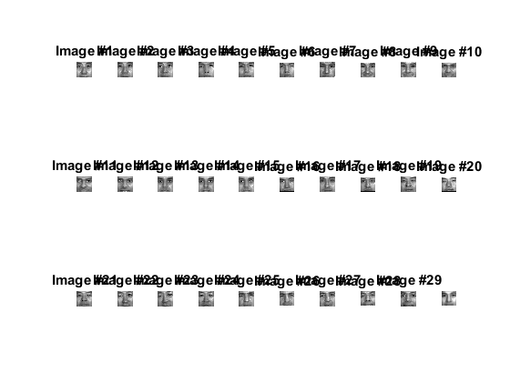 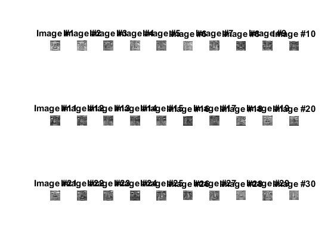

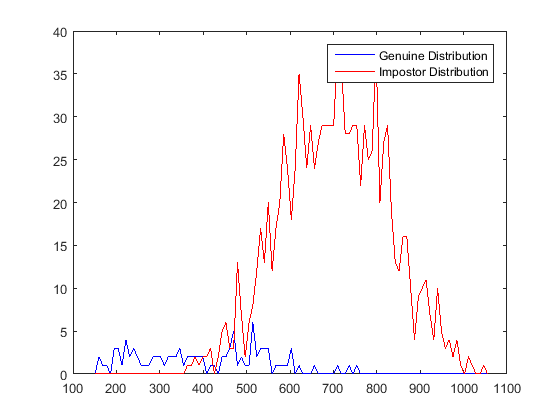 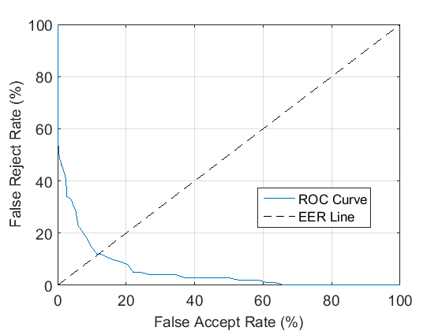 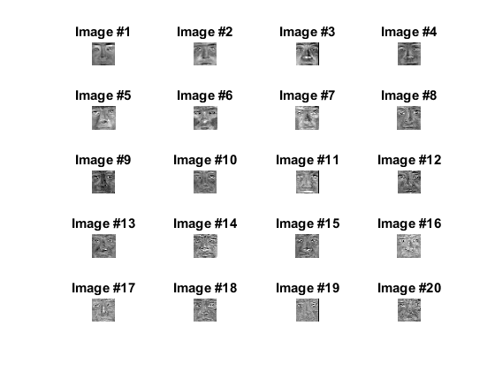 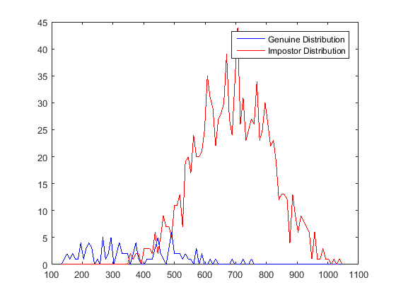 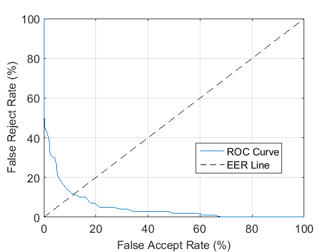 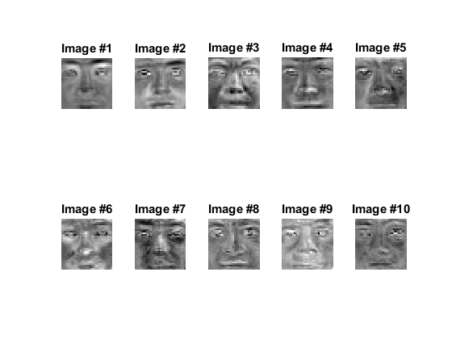 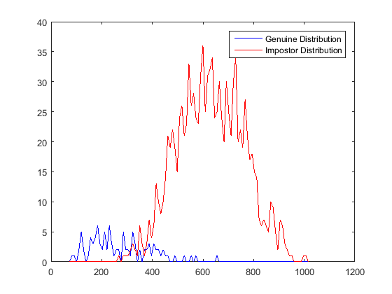 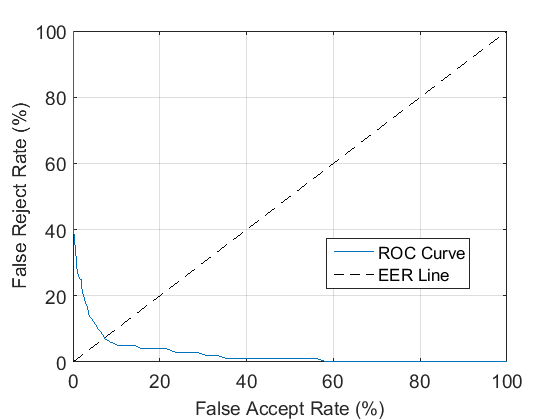 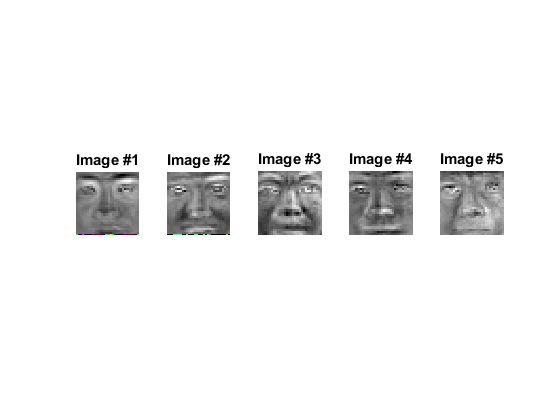 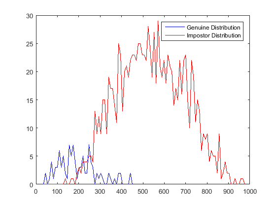 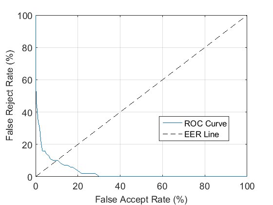